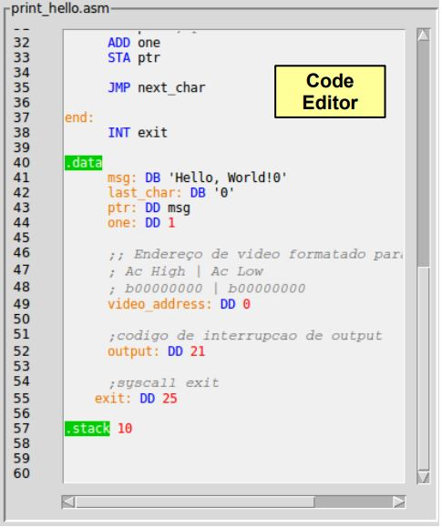
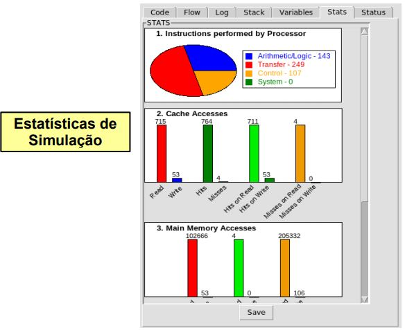
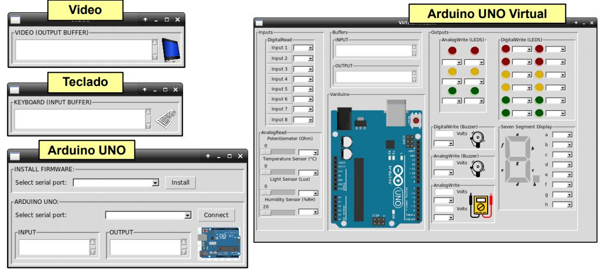
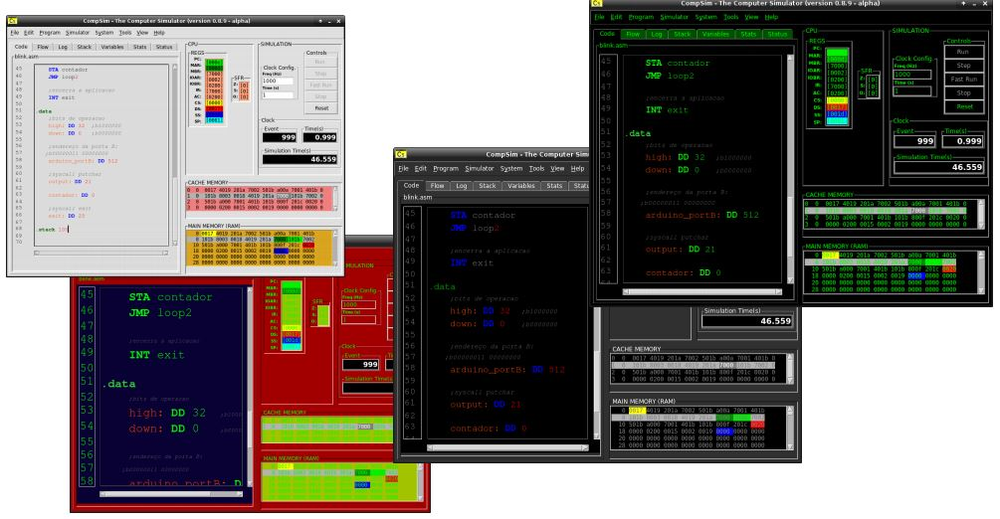

 O CompSim apresenta dois tipos de configurações de plataforma o modo default, onde o sistema já traz uma configuração padrão e o modo "customize", que permite a parametrização das configurações dos componentes (como por exemplo o número de linhas da memória cache ou da ram). Esse simulador possui seu próprio editor de código onde pode-se haver a criação de novas aplicações, um auxílio para codificação (com o code helper) e todas as outras funções já comuns em ambientes para edição de códigos, como: a possibilidade de ter-se comentários no código e recursos para edição (cortar, copiar, colar, etc). Além de haver também um montador onde tem-se a análise léxica, sintática e semântica do código.
Já no quesito dos controles da simulação têm-se 3 diferentes possíveis modos:
No aspecto da visualização pode-se encontrar o fluxo da execução da aplicação, eventos que ocorrem no hardware e até gráficos que são disponibilizados após feita a simulação.
O CompSim também oferece ferramentas de apoio auxiliando na inserção de hardwares, conversão de dados e códigos. Também está presente nele uma possível integração com periféricos, como por exemplo um arduino UNO virtual onde pode-se haver a utilização sem precisar de um arduino UNO "real".
Pode-se também personalizar o simulador alterando cores e tamanho da fonte atendendo às possíveis demandas do usuário.
